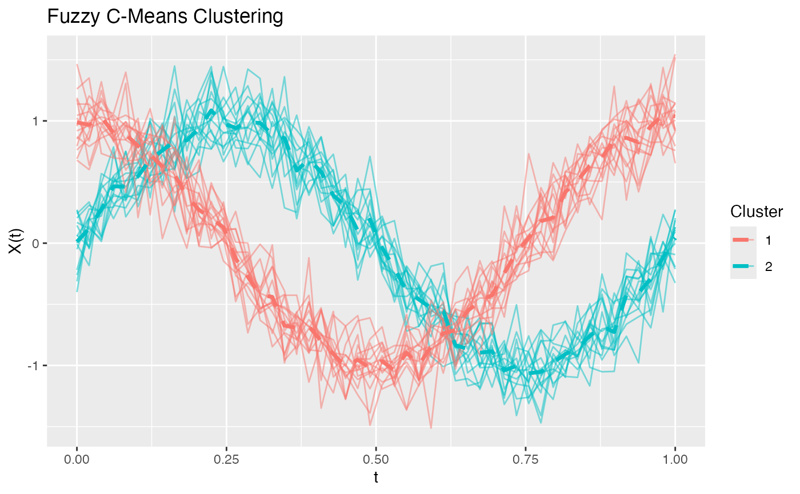

Performs fuzzy c-means clustering on functional data, where each curve has a membership degree to each cluster rather than a hard assignment.
Value
A list of class 'fuzzycmeans.fd' with components:
- membership
Matrix of membership degrees (n x ncl). Each row sums to 1.
- cluster
Hard cluster assignments (argmax of membership).
- centers
An fdata object containing the cluster centers.
- objective
Final value of the objective function.
- fdataobj
The input functional data object.
Details
Fuzzy c-means minimizes the objective function: $$J = \sum_{i=1}^n \sum_{c=1}^k u_{ic}^m ||X_i - v_c||^2$$ where u_ic is the membership of curve i in cluster c, v_c is the cluster center, and m is the fuzziness parameter.
The membership degrees are updated as: $$u_{ic} = 1 / \sum_{j=1}^k (d_{ic}/d_{ij})^{2/(m-1)}$$
When m approaches 1, FCM becomes equivalent to hard k-means. As m increases, the clusters become softer (more overlap). m = 2 is the most common choice.
See also
cluster.kmeans for hard clustering
Examples
# Create functional data with two overlapping groups
set.seed(42)
t <- seq(0, 1, length.out = 50)
n <- 30
X <- matrix(0, n, 50)
for (i in 1:15) X[i, ] <- sin(2*pi*t) + rnorm(50, sd = 0.2)
for (i in 16:30) X[i, ] <- cos(2*pi*t) + rnorm(50, sd = 0.2)
fd <- fdata(X, argvals = t)
# Fuzzy clustering
fcm <- cluster.fcm(fd, ncl = 2)
print(fcm)
#> Fuzzy C-Means Clustering
#> ========================
#> Number of clusters: 2
#> Number of observations: 30
#> Fuzziness parameter m: 2
#>
#> Cluster sizes (hard assignment):
#>
#> 1 2
#> 15 15
#>
#> Objective function: 1.0911
#>
#> Average membership per cluster:
#> C1 C2
#> 0.5 0.5
plot(fcm)

# View membership degrees for first few curves
head(fcm$membership)
#> [,1] [,2]
#> [1,] 0.9982817 0.0017182510
#> [2,] 0.9988480 0.0011520123
#> [3,] 0.9991014 0.0008985607
#> [4,] 0.9991047 0.0008952568
#> [5,] 0.9990083 0.0009917289
#> [6,] 0.9987222 0.0012778223